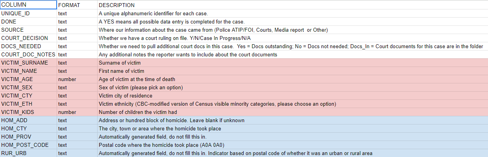

- Quick FOI recap
- Why ask for raw data?
- Step 1: Before you file
- Step 2: Request language
- Step 3: The negotiation process
- You've got the data! Now what?
- Story examples
- Questions, etc.
WHERE
WHAT
WHEN
HOW
All documents (including but not limited to research, presentations, documents, briefing notes, memos, summaries, communications, reports, etc.) relating to amnesty, pardons, clemency, expungement of records, etc. following the national legalization of cannabis for people who were previously charged or convicted of a cannabis-related crime. From Jan. 1, 2015 to present (September 19, 2018). Please provide records as they become available and call me immediately for any clarifications. Exclude media monitoring and cabinet confidences.
Several reasons…
- Governments are in the business of running databases.
- In Canada, we don’t file these very much. U.S. journalists learned long ago that these FOIs work.
- Data is pliable. Why trust aggregated/summarized data when you can get the raw stuff?
- These databases often go completely unanalyzed by the agencies that maintain them.
- These requests are often easier than regular FOIs.
Before filing, do your homework
- Find out the name of the database (this is key!). It likely has a boring name.
- Who administers it? Is there any documentation, handbooks or manuals online?
- Is the structure (column names) for this database listed anywhere? Protip: This is often referred to as the database “schema.”
Writing your request
The goal here is to get a spreadsheet (.xls, .xlsx, .csv) or database (.sql) file. So we need to be explicit:
Please provide a machine-readable, itemized (i.e. record-level) export in database or spreadsheet format (i.e. Microsoft Excel, Access, SQL or CSV file format, not .PDF) of XXXXX database, going back to when the database was created (OR from Jan. 1, 2018 to present day). Please include a data dictionary for the database, if one exists.
- Fees. Always challenge them!
- Privacy
- Redaction. Remind them that redacting should be as simple as deleting a column.
- Format (you really, really want a machine-readable spreadsheet)
- Timing
- Try to arrange a conference call with the data experts (FOI coordinators almost never know how data works)
- Always be nice
- Duty to assist
You’ve got the data! Now what?
- Make sure you understand the data. If you don’t, go back to the FOI officers. What does each row represent?
- If something seems off, go back to them. Sometimes they make mistakes. Be skeptical!
- Approach data with humility – check your analysis with someone who knows more than you
- If there are problems, you want to know before you present to your editor or publish
- Make sure the claims you are making are backed up by the data
Data Dictionary for Deadly Relationships

Questions, discussion, etc.